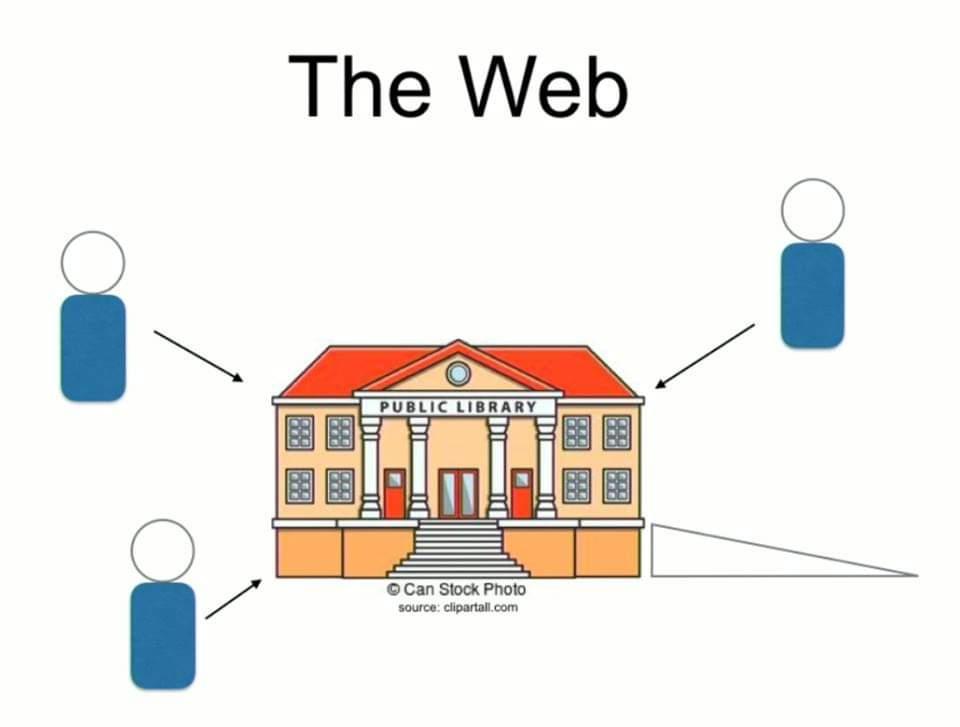
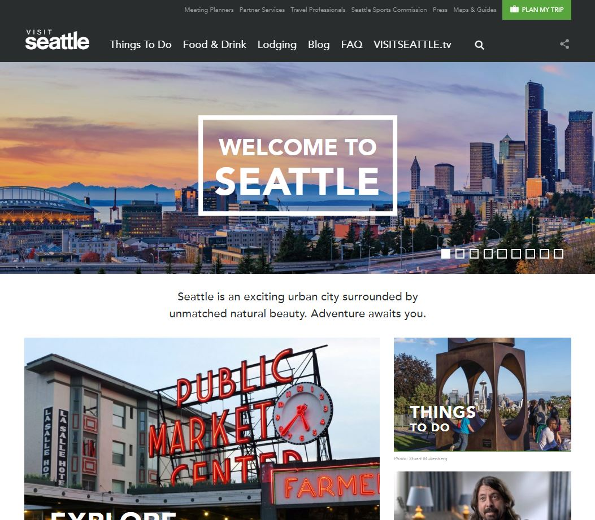
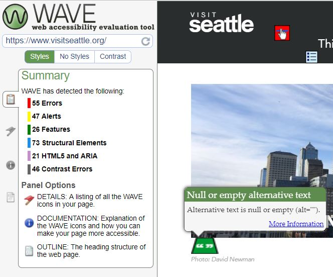

This week I'm reveiwing and evaluating the accessibility metrics and features of a chosen site, using a number of testing tools as well as manual a manual review. I have chosen to review Seattle's official travel and tourism site, Visit Seattle. The Visit Seattle web page has a large and wide audience, and it is important for the site to be accessible to multiple impairments
As James Byrd explained, in the Fullstack Academy video on Web Accessibility Guidelines "The web is a lot like a public library, it's a giant store of information available to everyone that people from all over can go to. But if you can't walk up the stairs, you'll have a bit of problem unless they've supplied an access ramp."
The Basics
Let's start with some basics. Knowing that you do not want to exclude visitors to your site with visual, hearing, learning and physical impairments is a good place to start. There are a number of resources that a developer can access to learn how to build a site with the appropriate accessibility features that address multiple issues. The W3 Web Content Accessibility Guidelines (WCAG) are a great place to start.
Some agreed upon basics include:
- Adding alt text to all images, which helps screen readers
- Organizing and assigning header tags in order
- Adding label tags to form fields
- Use high contrast colors between text and background
Now let's see how my chosen site fared.
Site Analysis
Aside from a manual review of the Visit Seattle page, I used two accessibility auditing tools to help with assessing the general accessibility of my chosen page. The tools I used were Google's Lighthouse Accessibility Audit technology available through Chrome DevTools and WebAim's Wave Web Accessibility Evaluation Tool.
My initial manual review of the page found it easy on the eyes, the navigation was displayed with high contrast large clear font, there didn't seem too many moving/overlapping parts that can cause usability and accessibility issues. The page had a good amount of white space and the font used from headings to descriptions is mostly black on white, clean and bright visually. I did notice though that it was somewhat difficult to read some of the headlines that show up on top of the images through out the page and that there are a few places like the image credits where the font size is very small and the color contrast is poor but this was generally on photo credits. In general, to the naked eye the site looks like a model page, easy to use and visually appealing.
Upon opening the the Chrome DevTools and running the Lighthouse audit I found that the page contained many more issues and actually had a fairly low accessibility score of 52. The tool listed out the specific issues/opportunities that affected the accessibility score. Each one opened up on to show the specific elements with the mentioned error and the detail on how to fix the issue. Here were the seven issues highlighted:
- Buttons do not have an accessible name
- Frame or iframe elements do not have a title
- Image elements do not have [alt] attributes
- Form elements do not have associated labels
- Links do not have a discernible name
- Background and foreground colors do not have a sufficient contrast ratio
- Some elements have a [tabindex] value greater than 0
The Wave tool also showed that the page had multiple serious accessibility issues and allowed for a thorough review of the page with and without styles and all the areas where contrast was an issue. The wave tool had some very handy features that explained the errors by "what it means, why it matters, how to fix it and a direct link to the guidelines being overlooked. The Wave tool pointed out 55 high alert errors and 46 Contrast errors. Below is a screen shot of the it's accessibility summary and user interface.
Summary
In summary, these accessibility tools helped identify multiple serious development misses pertaining to basic accessibility guidelines. Some simple improvements that could be made would be adding alt attribute descriptions, adding labels to the form inputs and adding a gradient film to help with the number of contrast issues on images with text.